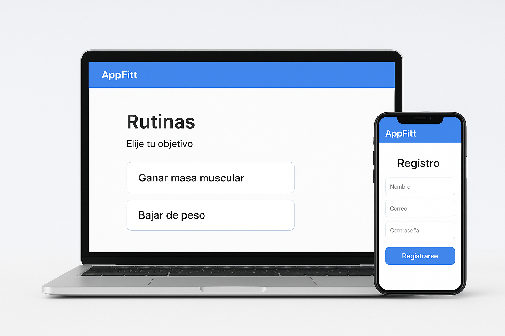
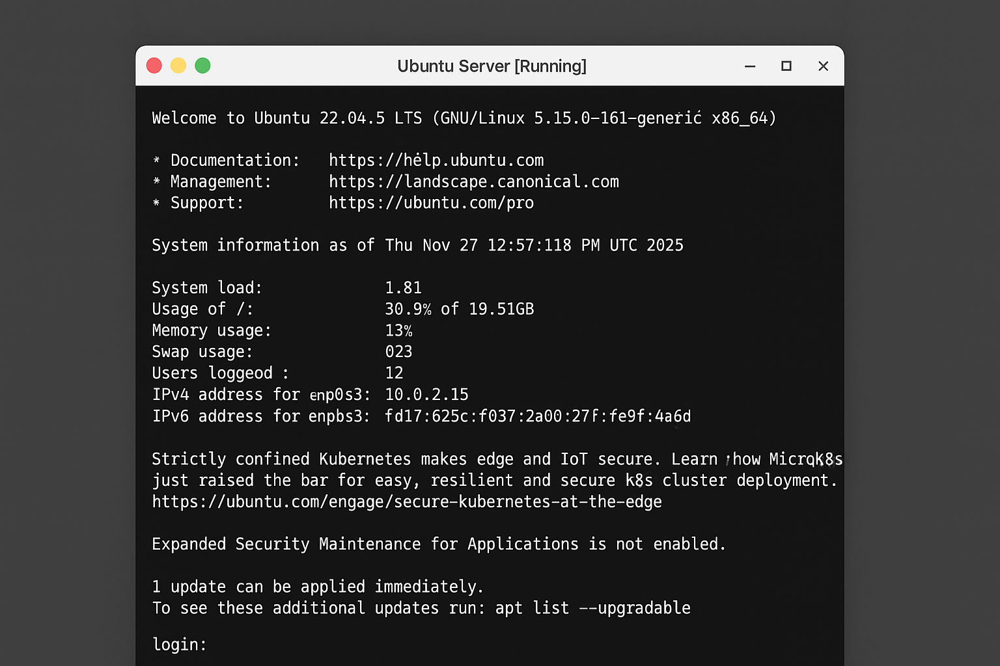
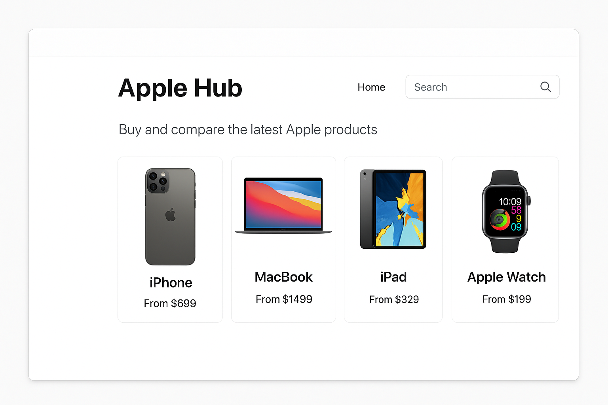

Certificaciones
- 🎓 Git y GitHub – Platzi (2024)
- 🌐 Desarrollo Web con HTML y CSS – Platzi (2025)
- 🤖 Inteligencia Artificial y ChatGPT en Proyectos – Platzi (2025)
- 🧠 Building GenAI Applications with MongoDB – MongoDB (2025)


Desarrollador Web | Estudiante de Tecnologia en Desarrollo de Software
Soy un estudiante de Software con gran interés en el desarrollo web, la programación y la tecnología aplicada. Me gusta aprender constantemente nuevas herramientas y lenguajes, buscando siempre mejorar mis habilidades y aportar valor en cada proyecto.
Aplicación en Java y MySQL con interfaz gráfica que permite registrarse, iniciar sesión, elegir un objetivo (ganar masa muscular o bajar de peso) y visualizar rutinas predefinidas organizadas por grupos musculares, almacenando la selección del usuario en la base de datos.

Proyecto en el que instalé y configuré máquinas virtuales usando VirtualBox, incluyendo Ubuntu Server y Linux Lite, realizando ajustes iniciales como creación de usuarios, configuración de red, instalación de servicios básicos y preparación del entorno para despliegue de aplicaciones.

Proyecto web desarrollado con Next.js 15 y PostgreSQL que simula una tienda tipo Apple, permitiendo explorar productos, ver detalles y gestionar un carrito de compras mediante una interfaz moderna y organizada.
